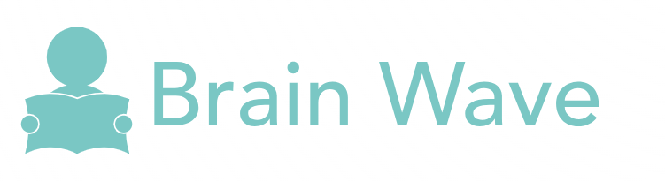

Home
YouTube Videos
PY Questions
Notes
Reference Books
Sign In
Past Year Questions
Basic Electrical Engineering - 2020
Download Question Paper
Basic Electrical Engineering - 2020
Download Question Paper
Engineering Mechanics - 2020
Download Question Paper
Engineering Mechanics - 2020
Download Question Paper
C Programming- 2020
Download Question Paper